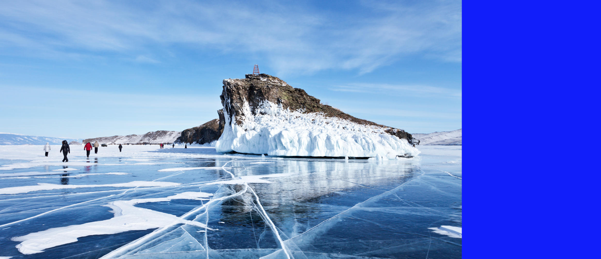

Доверьте свой отдых нам
ЭНЕРГЕТИКА ОЗЕРА БАЙКАЛА ЗАРЯДИТ ВАС ПОЛОЖИТЕЛЬНЫМИ ЭМОЦИЯМИ НА ЦЕЛЫЙ ГОД
Малое море
Уникальный по природным условиям район Байкала.
В переводе с бурятского Нарин Далай означает узкое море.
Расположено оно между западным побережьем озера и самым
крупным на озере островом Ольхон. Соединяет Малое море с
озером пролив Ольхонские Ворота. Море имеет сложную береговую
линию, образующую множество мелководных бухт, удобных для
стоянок туристов и укрытия маломерных судов. Малое количество
осадков, большое количество солнечного света, тёплая вода в заливах,
красивые горно-таёжные и лесные ландшафты, а также доступность
берегов Малого моря сделали его одним из наиболее популярных мест
отдыха. Это одна из самых обширных мелководных частей озера, богатая
рыбой. Вода в мелководных заливах прогревается летом до + 19-21°С.

Парк-отель
"Байкал"
Уютный уголок Байкала на Малом море. Это комфортное
и спокойное место для семейного отдыха, вечеринки с друзьями,
выездного корпоративного праздника или же делового события.
Великое озеро меняется каждый день — оно никогда не бывает
одним и тем же, а мы ждем вас в гости 365 дней в году.
Парк-отель «Байкал» расположена в 260 км от Иркутска у
подножья одного из самых живописных мысов Байкала — мысе Уюга.
Недалеко от парк-отеля раскинулся песчаный пляж теплого залива
Хагдан-Далай. С берега и окон домиков «Байкала» видна чудесная
панорама острова Ольхон. Летом можно доплыть на лодке, а
зимой — прогуляться по льду до сакрального места буддистов — Ступы
Просветления на острове Огой.
ПОДПИСЫВАЙТЕСЬ НА ОБНОВЛЕНИЯ


Контакты
 Берег Байкала, Малое Море.
Берег Байкала, Малое Море.
Иркутская Область,
Ольхонский Район,
местность Уюга
 +7(952)-600-70-60 (Александра)
+7(952)-600-70-60 (Александра)
 info@baikal-yuga.ru
info@baikal-yuga.ru
Гостям предлагается
- Пляж (первая линия)
- Принадлежности для барбекю
- Терраса
- Экскурсия или презентация о
местной культуре*
- Пешеходные экскурсии*
- Снаряжение для бадминтона
- Велоспорт
- Маршруты для пеших прогулок
- Настольный теннис*
- Рыбная ловля
*Оплачивается отдельно
Рубанников Марк (https://vk.com/jakemr), Рахманская Арина (https://vk.com/top_borrshik)